Linux6.1.36_User’s Compilation Manual_V1.1
Document classification: □ Top secret □ Secret □ Internal information ■ Open
Copyright
The copyright of this manual belongs to Baoding Folinx Embedded Technology Co., Ltd. Without the written permission of our company, no organizations or individuals have the right to copy, distribute, or reproduce any part of this manual in any form, and violators will be held legally responsible.
Forlinx adheres to copyrights of all graphics and texts used in all publications in original or license-free forms.
The drivers and utilities used for the components are subject to the copyrights of the respective manufacturers. The license conditions of the respective manufacturer are to be adhered to. Related license expenses for the operating system and applications should be calculated/declared separately by the related party or its representatives.
Overview
This manual is designed to enable you to quickly understand the compilation process of the products and familiarize yourself with the compilation methods of Forlinx products. The application needs to be cross-compiled on an ubuntu host before it can run on the development board. By following the methods provided in the compilation manual and performing practical operations, you will be able to successfully compile your own software code.
The manual will provide instructions for setting up the environment but there may be some unforeseen issues during the environment setup process. For beginners, it is recommended to use the pre-configured development environment provided by Forlinx. This will allow you to quickly get started and reduce development time.
Linux systems are typically installed in three ways: dual system on a real machine, single system on a real machine, and virtual machine. Different installation methods have their advantages and disadvantages. This manual only provides methods to build ubuntu in a virtual machine.
Hardware Requirements: It is recommended to have at least 8GB memory or above. It allows for allocating a sufficient memory to the virtual machine (recommended to allocate 2GB or above), while still leaving enough resources for other operations on Windows. Insufficient memory allocation may result in slower performance on Windows.
The manual is mainly divided into five chapters:
Chapter 1. is mainly about the installation of VMware, and the version used is VMware® Workstation 15 Pro15.1.0. You need to install VMware before using the ubuntu development environment;
Chapter 2. mainly introduces the method of loading the ubuntu development environment provided by Forlinx, and the development environment is 64-bit ubuntu22.04;
Chapter 3. mainly introduces the method of building a new ubuntu development environment. This section uses the 64-bit ubuntu22.04 as an example to describe the process of Ubuntu creation, cross-compiler installation, and QT Creator installation. Due to different computer configurations, unexpected problems may occur in the building process. It is recommended that beginners directly use the environment we have built;
Chapter 4. mainly describes the compiling method of the source code related to the development board, including the kernel source code compilation and the application program compilation;
Chapter 5. is mainly about the way to flash the compiled image into the development board.
Application Scope
This manual is mainly applicable to the Linux6.1.36 operating system on the Forlinx OK-MX9352-C platform. Other platforms can also refer to it, but there will be differences between different platforms. Please make modifications according to the actual conditions.
Revision History
Date |
Manual Version |
Revision History |
|---|---|---|
01/07/2024 |
V1.0 |
Linux6.1.36 Qt6.5.0 User’s Compilation Manual Initial Version |
22/03/2025 |
V1.1 |
1. Modifying the description of “4.2 Source Code Package Installation”; 2. Change OK-MX9352-C.dtb to OK-MX93-C.dtb. |
1. Vmware Installation
Virtual Machine refers to a complete computer system with complete hardware system functions simulated by software and running in a completely isolated environment. Virtual machines can simulate other kinds of operating systems; it is convenient for you to manage and use different development environments and operating systems in the development process.
Common virtual machine software includes VMware(VMWare ACE), Virtual Boxand Virtual PC, all of which can virtualize multiple computers on Windows systems. Forlinx adopts VMware. If you are not familiar with the virtual machine software, it is recommended to use the same virtual machine software as Forlinx.
1.1 VMware Software Download and Purchase
Go to the VMware website https://www.vmware.com/cn.html to download Workstation Pro and get the product key. VMware is a paid software that requires purchasing, or you can choose to use a trial version.
After the download is complete, double-click the installation file to start the installation program.
1.2 VMware Installation
Step 1: Double-click the startup program to enter the installation wizard, and click “Next”;
Step 2: Check “I accept the terms in the license agreement (A)” and click “Next”;

Step 3: You can modify the installation location, install it to the partition where your computer installs the software, and click “Next”;
Step 4: Decide whether to check the two check boxes and click “Next”:
Step 5: Check the option to add the shortcuts and click “Next”;
Step 6: Click “Install”;
Step 7: Wait for the installation to complete;
Step 8: After the installation is completed, you can click “Finish” for trial. If users need to use it for a long time, they need to buy it from the official and fill in the license. Go to the license activation page and enter the purchased license key.
You can also click Skip. After completion, open the VMware software, click Help in the status card above, and enter the license key in the pop-up window.
1.3 VMware Network Connection
By default, after the virtual machine is installed, the network connection method is set to NAT, which shares the host machine’s IP address. This configuration does not need to be changed when performing tasks like installing dependencies or compiling code.
In a virtual machine, when the VMware virtual network card is set to NAT mode, the network in Ubuntu environment can be set to dynamic IP. In this mode, the virtual NAT device is connected to the host network card for communication and internet access. This is the most commonly used method for external networking on the virtual machines.
2. Forlinx Development Environment Import
Note:
It is recommended for beginners to directly use the pre-built virtual machine environment provided by Forlinx, which already includes installed cross-compiler and Qt environment. After understanding this chapter, you can jump directly to “4. Linux Compilation”;
**If you need to manually set up the development environment, you can directly skip this chapter and refer to“3. Building the Development Environment Manually”; **
The development environment provided is: forlinx (username), forlinx (password).
Forlinx provides an installed Ubuntu development environment, which you can directly open and use in Vmware without installing additional software.
First, download the development environment provided by Forlinx. In the development environment documentation, there should be an MD5 checksum file. After downloading the development environment, you should verify the integrity of the compressed package using the MD5 checksum. (You can use an on-line MD5 checksum tool or download a specific MD5 checksum tool for this purpose). To check if the checksum in the verification file matches the checksum of the file itself. If they match, the file download is successful. If they don’t match, it suggests that the file may be corrupt, and you should consider downloading it again.
Select all the compressed packages and right click to extract them to the ok-mx93 development environment:
After decompression, the “ok-mx93 development environment.vmx” in the “ok-mx93 development environment” folder is the file to be opened by the virtual machine.
Open the installed virtual machine.
Select the directory where the “ok-mx93 development environment” virtual machine file just extracted is located, and double-click to open the startup file:
After loading, click to start the virtual machine to run. Enter the interface of the system.
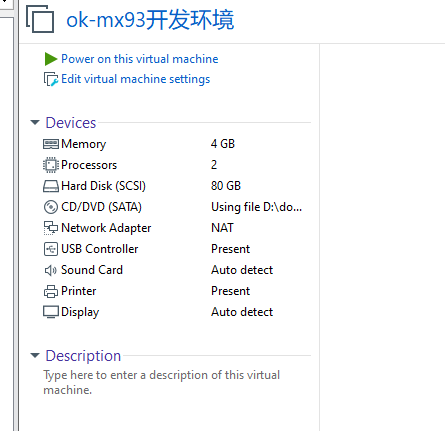
The account of the development environment is forlinx, and the password is forlinx.
So far, you have successfully entered the development environment provided by Forlinx, and you can put the source code in the user information folder into the development environment to start compiling and other operations. See 4. Linux Compilation
3. Manual Setup of Development Environment
Ubuntu is a Linux operating system distribution primarily focused on desktop applications. Ubuntu has many advantages and offers its own strengths compared to other Linux distributions. First of all, installing the system is very easy, requiring very little setup, and is fully comparable to a Windows desktop system; secondly, the GUI is very user-friendly and mimics the shortcuts that are commonly used under XP; when installing and upgrading programs, you can install the dependent packages by the system itself through the network, so you don’t have to worry about the dependencies of the Linux system anymore. Considering everyone’s usage habits and learning needs, it would be a good choice to use Ubuntu Linux.
There are numerous versions of Linux desktop systems, and currently, all the Linux experiments and source code in this manual are performed on the Ubuntu 22.04 system. With other versions of Linux desktop systems, problems related to the gcc compiler and library files may occur. If you encounter similar issues, you can seek advice and inquire on the official forums of the Linux distribution vendor. If you are not familiar with Linux, the method introduced by Forlinx is highly recommended.
Why is it necessary to install these things? Because a Linux environment is required for development work. Compiling Kernel source code, Qt applications, uboot, and the like cannot be done under Windows. These tasks must be performed under a Linux environment. Given that most users are accustomed to the Windows environment, VMware software is utilized to provide Ubuntu virtual machines. Of course, Linux can also be installed on a computer or server for development.
Next, the process of building the virtual machine will be introduced.
Note: Beginners are not recommended to set up a system on their own. It is recommended to use an existing virtual machine environment. If you do not need to set up the environment, you can skip this section.
3.1 Ubuntu System Virtual Machine Installation
The version of Ubuntu selected for installation is 22.04 and the introduction and development in this manual are all carried out on Ubuntu22.04. First go to the Ubuntu official website to get the Ubuntu 22.04 64-bit image, the download address is: http://releases.ubuntu.com/22.04/
Download “Ubuntu-22.04.1-desktop-amd64.iso” (you can download the version that you actually need; this is just an example with 22.04.1).

3.1.1 Vmware Ubuntu Image Installation
If you want to build your own virtual machines, you can choose to install new virtual machines. However, if you don’t have a need for this, downloading the pre-built virtual machine is recommended to save time and avoid problems, as building a virtual machine is tedious and time-consuming.
Step 1: Open the VMware software and click on “Create New Virtual Machine”. Enter the following interface, check “Customize (Advanced)” and click “Next”:
Step 2: Select the compatibility of the corresponding VMware version. The version can be viewed in Help-> About VMware Workstation. Click “Next” after confirmation:
Select “Install program from disc image file”, then click “Next”；
Enter the virtual machine name and configuration installation location, and click “Next”:
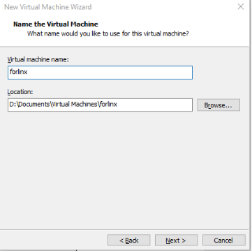
Configure the number of cores, click “Next”:
Configure appropriate memory space and select “Next”:
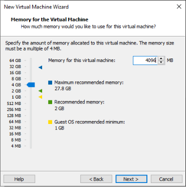
Set the network type, use the default NAT for networking, and click “Next”. Subsequent steps remain at the default values until the disk capacity step is specified.
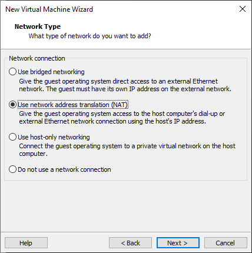
Use the recommended I/O controller, click “Next”:
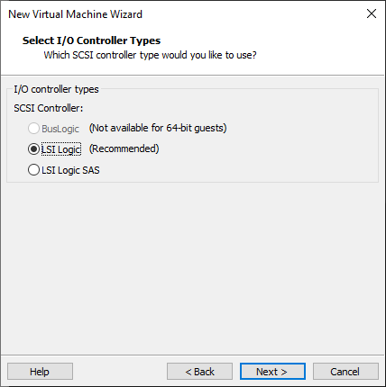
Use the recommended disk type, click “Next”:
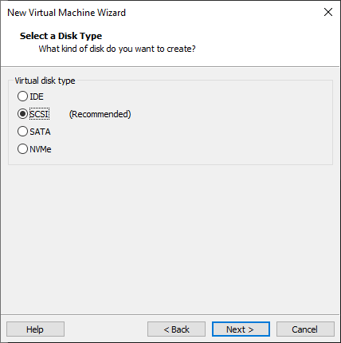
Use the default options, create a new virtual disk and click “Next”:
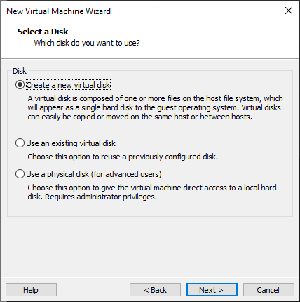
Allocate a disk size of 80G and divide the virtual disk into multiple files, click “Next”:
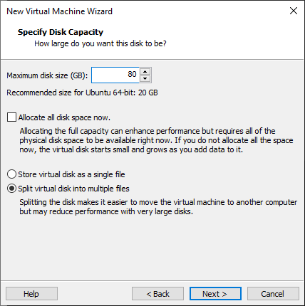
Click “Next” by default:
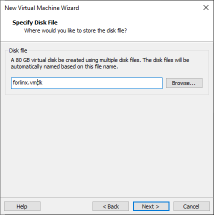
Click “Finish”:
Once the virtual machine is powered on, select Try to Install Ubuntu.
Select the language and select install Ubuntu
Select a keyboard layout.
Select to upgrade and install the software, and continue by default.
Select the installation method and hard disk partition. The default is to install now and continue.
Enter the account no.
After that, the virtual machine starts to install the image and wait patiently.
3.1.2 Solutions to VMware Error Reporting
Error 1: Unable to connect to MKS: Too many socket connection attempts; giving up.

Solution: Right click on my computer to manage services and application services, and turn on all services related to VMware. After the service has started successfully, restart the virtual machine; or hang the virtual machine first, wait for it to start, and then continue to run the hung virtual machine.

Error 2: Internal error.
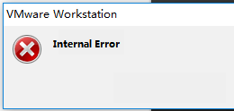
Solution: Refer to error 1.
Error 3: Unable to install service VMware Authorization Service (VMAuthdService):
Solution:
win+R
Enter services.msc
Then find the service and start it, because this service is the authorization and authentication service used to start and access the virtual machine.

WMI must be started first.

Error 4: Failed to install the hcmon driver

Solution: Delete C:\Windows\System32\drivers\hcmon.sys, then install again.
Error 5: Intel VT-x is disabled.
Solution:
Enter the BIOS interface (F2 or F12) when booting;
configuration – > intel virtual technology – > Change disabled to enabled – > Save the settings, exit and restart;
Reopen VMware and power on the virtual machine.
If that doesn’t work, just turn the firewall off and reopen the VM. (varies by machine).
Error 6: The virtual machine appears to be in use… Acquiring Ownership (T)

Solution:
Shut down the virtual machine;
Enter the storage directory of the virtual machine and delete the *.lck file. The lck represents the locked file;
Open Windows Task Manager and kill the VMware process.
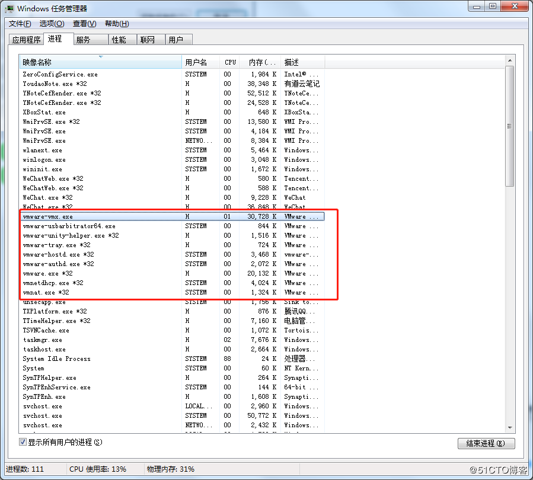
Restart the virtual machine.
Error 7: Failed to lock file.
Solution:
Enter the storage directory of the virtual machine;
Delete. Vmem. Lck. Vmdk. Lck, *. Vmx. Lck;
Reopen the virtual machine and enter the virtual machine normally.
Error 8: The virtual machine could not be started because there was not enough memory available on the host.
Solution:
The virtual machine does not have enough memory to run the maximum requirement of the image. Increase the memory of the virtual machine and restart the virtual machine.
3.2 Ubuntu Common Software Installation
3.2.1 VScode
Click the icon similar to a package on the left side of the desktop to see some tools. You can also search for the tools you want. For example, download a VScode tool, which is very convenient for the daily coding.
Please search for the tool you need, click in to view details, click install to download, wait for the download to complete automatic installation, and then click “Launch” to run it.
3.2.2 NFS Installation
The terminal executes the following command:
forlinx@ubuntu:~$ sudo apt-get install -y nfs-kernel-server nfs-common portmap
3.2.3 FTP server
After FTP is installed, files under Windows system and files under Ubuntu system can be transferred to each other. Due to compatibility issues between Ubuntu 22.04 and VMware Tools, file transfers are performed in this way.
1. FTP Installation
forlinx@ubuntu:~$ sudo apt-get install vsftpd
After the installation, use the vim command to open the/etc/vsftpd. conf, and open the following two configurations:
local_enable=YES
write_enable=YES
After saving and exiting, restart the FTP service
forlinx@ubuntu:~$ sudo /etc/init.d/vsftpd restart
2. Client Connection for Windows
Path: OK-MX9352-C (Linux) User Profile/Tools/FileZilla_3.24.0.0_win64-setup.exe
Note: It is necessary to ensure that the Windows system and the Ubuntu system network are interoperable. Otherwise, it is necessary to set the network configuration of the virtual machine.
After the installation is completed, open the client and the following interface appears:
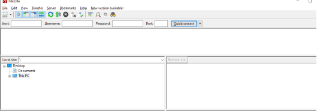
Click File-Site Management.

Add the IP address under the Ubuntu system to the host, user name: forlinx, password: forlinx. Click Connection.
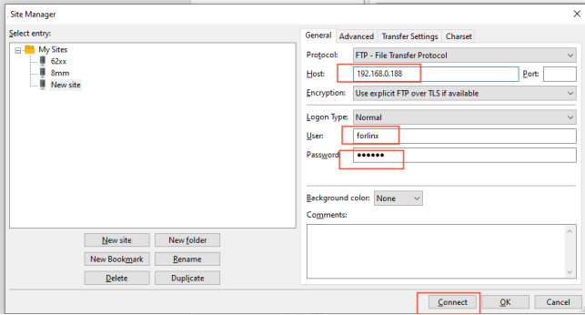
After a successful connection, you can display the directory structure under the Ubuntu system and transfer files from the Windows system to the Ubuntu system via network.
3.3 Cross-compilation Environment
The cross-compilation environment is divided into installing the toolchain and setting cross-compilation environment variables.
3.3.1 Installation of Cross-compilation Tool Chain
Make sure that the network is open during the installation process and that the Ubuntu system has access to an extranet.
Step 1: Create a working directory in Ubuntu:
forlinx@ubuntu:~$ mkdir -p /home/forlinx/work
Step 2: Copy the installation script to this directory
Path: OK-MX9352-C (Linux) User Profile/Linux/Source Code/OKMX93-linux-sdk.tar.bz2/tools/fsl-imx-xwayland-glibc-x86_64-meta-toolchain-qt6-armv8a-imx93evk-toolchain-6.1-mickledore.sh
Step 3：Go to the/home/forlinx/work directory:
forlinx@ubuntu:~$ cd /home/forlinx/work
Step 4：Execute the following command to install:
forlinx@ubuntu:~$ ./fsl-imx-xwayland-glibc-x86_64-meta-toolchain-qt6-armv8a-imx93evk-toolchain-6.1-mickledore.sh
NXP i.MX Release Distro SDK installer version 6.1-mickledore ============================================================
Enter target directory for SDK (default: /opt/fsl-imx-xwayland/6.1-mickledore): You are about to install the SDK to "/opt/fsl-imx-xwayland/6.1-mickledore". Proceed [Y/n]? Y
[sudo] forlinx 的密码：forlinx //Enter the password for the forlinx user
Extracting SDK.............................................................................................................................................................................................................................................................................................................................................................................................................done
Setting it up...done
SDK has been successfully set up and is ready to be used.
Each time you wish to use the SDK in a new shell session, you need to source the environment setup script e.g.
$ . /opt/fsl-imx-xwayland/6.1-mickledore/environment-setup-armv8a-poky-linux
This printed information proves that the installation was successful.
SDK has been successfully set up and is ready to be used.
Step 5: QT Configuration Modification
forlinx@ubuntu:~$ sudo vi /opt/fsl-imx-xwayland/6.1-mickledore/sysroots/armv8a-poky-linux/usr/include/
QtGui/qtgui-config.h
Modify to
3.3.2 Environment Variables Settings
Note:
After setting the environment variables, you don’t need to reset them the next time you compile as long as you don’t change terminals;
If you reopen a new terminal or switch accounts, you need to reset the environment variables before compiling.
The main purpose of setting up the compilation environment is to specify the target architecture and cross-compilation toolchain, as well as the paths of some libraries used in the compilation process, etc. Use the following commands to configure the compilation environment followed by a space:
forlinx@ubuntu:~$ . /opt/fsl-imx-xwayland/6.1-mickledore/environment-setup-armv8a-poky-linux
Judge whether the setting is successful by the following command:
forlinx@ubuntu:~$ $CC -v
Using built-in specs.
COLLECT_GCC=aarch64-poky-linux-gcc
[…]
Thread model: posix
Supported LTO compression algorithms: zlib zstd
gcc version 12.3.0 (GCC) //Confirm that the setting is successful through the GCC version information
3.4 QT Environment Setup and Use
Qt Creator is a cross-platform QT integrated development environment (IDE) that includes advanced C + + code editors, project and build management tools for QT application framework design and application development. Qt Creator8.0.2 selected for the installation.
The SDK provided by Forlinx provides a complete development environment for Qt6.3.2 (including Qt Quick).
3.4.1 Qt Creator Environment Setup
Before compiling, execute the following commands to install the necessary toolkits.
forlinx@ubuntu:~$ sudo apt-get update
forlinx@ubuntu:~$ sudo apt-get upgrade
forlinx@ubuntu:~$ sudo apt-get install openssh-server vim git fakeroot make automake autoconf libtool libssl-dev bc dosfstools mtools parted iproute2 gcc kmod flex bison libxcb-xinerama0 gawk
Path: OK-MX9352-C (Linux) user profile\tools\qt-creator-opensource-linux-x86_64-8.0.2.run
Copy qt-creator-opensource-linux-x86_64-8.0.2.run to any directory in the current user’s home directory and execute it:
forlinx@ubuntu:~/ok-mx93$ chmod 777 ./qt-creator-opensource-linux-x86_64-8.0.2.run
forlinx@ubuntu:~/ok-mx93$ ./qt-creator-opensource-linux-x86_64-8.0.2.run
The following interface will pop up, enter the QT account, and click “Next” to enter the next step:
Agree to the agreement, click “Next” to go to the next step:
Click “Next” to go to the next step:
In the following screen, click “Browse …” Select the installation path of Qt creator, and then click “Next” to enter the next step:
Click “Next” in the following interface to enter the next step:
Agree to the agreement and click “Next”:
Click Install to install:
After the installation is completed, the following interface will be displayed. Uncheck the option “Launch Qt Creator” “and click” Finish “to complete the installation steps of Qt Creator:
Enter the qtcreator actual installation directory/home/forlinx/qtcreator-8.0.2//Tools/QtCreator/bin/directory:
forlinx@ubuntu:~$ cd /home/forlinx/qtcreator-8.0.2//bin/
Start Qt Creator：
forlinx@ubuntu: ~/qtcreator-8.0.2/bin $ sudo ./qtcreator
[sudo] password for forlinx: forlinx //Enter the password for the forlinx user, no display
QStandardPaths: XDG_RUNTIME_DIR not set, defaulting to '/tmp/runtime-root'
The Qt Creator tool screen appears. Qt Creator is installed.
3.4.2 Environment Configuration
Note:
Be sure to configure the environment variables (refer to “3.3.2 Setting Environment Variables”) before opening Qt Creator with the command;
Open Qt Creator according to your actual installation path.
Qt is a cross-platform graphics development library, which supports many operating systems. Before compiling, you need to configure the compiling environment of Qt Creator.
3.4.2.1 Configuration of the Cross-compiler
Start Qt Creator, and the Qt development interface will appear. Click Tools-> external-> Configure option:
Enter the Preference interface, click “Kits” on the left, then click the “Compilers” tab on the top of the middle, and click “Add-> GCC-> C + +” on the right, as shown in the figure:
The following window pops up, click Browser in the Compiler path option to find “aarch64-poky-linux-g++” in /opt/fsl-imx-xwayland/6.1-mickledore/sysroots/x86_64-pokysdk-linux/usr/bin/aarch64-poky-linux of SDK package, then click Open, and change Name to “G++”.
Add the GCC compiler using the same method, click on “Add>GCC ->C” on the right, as shown in the figure:
Find “aarch64-poky-linux-gcc” in SDK package/opt/fsl-imx-xwayland/6.1-mickledore/sysroots/x86_64-pokysdk-linux/usr/bin/aarch64-poky-linux then click Open, and change Name to “G++”.
3.4.2.2 Debuggers Configuration
Click on the debuggers tab, the following interface will pop up, click Add:
The following window will pop up, find “aarch64-poky-linux-gdb” in SDK package/opt/fsl-imx-xwayland/6.1-mickledore/sysroots/x86_64-pokysdk-linux/usr/bin/aarch64-poky-linux, then click Open, and change Name to “debuggers”.
3.4.2.3 Qt Version Configuration
Click on the Qt Versions tab and select Add:
Find qmake in /opt/fsl-imx-xwayland/6.1-mickledore/sysroots/x86_64-pokysdk-linux/usr/bin, then select and click open. After adding, it will display as follows. Click Apply.
If the environment variables are configured correctly, it will show configured as follows：
3.4.2.4 Kits Configuration
Click on the “Kits” tab, click on “Add” on the right, add a new Kit, modify it according to the content shown in the figure below, and click “Apply”.
4. Linux Compilation
Note: Cross-compilation toolchain and Qt Creator desktop application are already installed by default in the development environment provided by Forlinx, so there is no need to reinstall them.
Versions :
Development environment Operating system: Ubuntu22.04 64;
Cross tool chain: aarch64-poky-linux-gcc 12.3.0;
Bootloader of Development board: U-Boot 2023.04;
Development board kernel: Linux 6.1.36;
Development board porting Qt version: Qt6.5.0.
4.1 Preparation Before Compilation
The Forlinx OK-MX93-linux-sdk package includes a cross-compilation toolchain, Linux kernel source code, file system, source code for test programs, and some tools.
Before compiling, execute the following commands to install the necessary toolkits.
forlinx@ubuntu:~$ sudo apt-get update
forlinx@ubuntu:~$ sudo apt-get upgrade
forlinx@ubuntu:~$ sudo apt-get install openssh-server vim git fakeroot make automake autoconf libtool libssl-dev bc dosfstools mtools parted iproute2 gcc kmod flex bison libxcb-xinerama0 gawk
4.2 Source Code Installation Package
Note: Due to the compatibility between Ubuntu 22.04 and VMware, files under windows cannot be directly copied to Ubuntu system. It is recommended to use FTP here (refer to 3.2.4 FTP server).
Path: OK-MX9352-C (Linux) User Profile\Linux\Source Code\OKMX93-linux-sdk.tar.bz2*
The source code package contains the source code required by OK-MX93 platform provided by Forlinx, including Linux kernel source code, test program source code, file system, etc. You can carry out secondary development on this basis.
Create a working directory in Ubuntu
forlinx@ubuntu:~$ mkdir -p /home/forlinx/ok-mx93
Copy OKMX93-linux-sdk.tar.bz2 to the virtual machine/home/worldinx/ok-mx93 directory and unzip:
Due to the compatibility issue between Ubuntu22.04 and VMware, you can’t directly copy the files from windows to the ubuntu system, here it is recommended to use FTP or a shared folder.
forlinx@ubuntu:~/ok-mx93$ md5sum OKMX93-linux-sdk.tar.bz
e8505d7aa1cff443f46989fe72454872 OKMX93-linux-sdk.tar.bz
//Due to different versions and packaging times, there may be differences in the md5 value of the SDK package. Please determine whether the SDK package is complete based on the md5 value in sdk_md5sum.exe obtained from the SDK.
forlinx@ubuntu:~/ok-mx93$ tar -xvf OKMX93-linux-sdk.tar.bz2
forlinx@ubuntu:~/ok-mx93 $ ls
OKMX93-linux-sdk OKMX93-linux-sdk.tar.bz //The file was extracted successfully
4.3 Compilation Test
Note:
After initially unzipping the SDK source code, you need to compile the source code as a whole first;
After the overall compilation, it can be compiled separately according to the actual situation.
4.3.1 QT Configuration
Modifying qtgui-config.h file.
Step1: Enter /home/forlinx/ok-mx93/ OKMX93-linux-sdk directory:
forlinx@ubuntu:~$ cd /home/forlinx/ok-mx93/OKMX93-linux-sdk
Step 2: QT Configuration
forlinx@ubuntu:~/ok-mx93/OKMX93-linux-sdk$ sudo ./environment-setup-aarch64-toolchain
4.3.2 Environment Variables Settings
Note:
After setting the environment variables, you don’t need to reset them the next time you compile as long as you don’t change terminals;
If you reopen a new terminal or switch accounts, you need to reset the environment variables before compiling
Setting environment variables is mainly to specify the target architecture and cross-compilation tool chain, as well as the path of some libraries used in the compilation process. Use the following command to configure (there is a space behind).
forlinx@ubuntu:~/ok-mx93/OK-MX93-linux-sdk $ . environment-setup-aarch64-toolchain
Enter the following command to check whether the installation is successful:
forlinx@ubuntu:~/ok-mx93/OK-MX93-linux-sdk $ $CC -v
Using built-in specs.
COLLECT_GCC=aarch64-poky-linux-gcc
[…]
Thread model: posix
Supported LTO compression algorithms: zlib zstd
gcc version 12.3.0 (GCC) //Confirm successful installation through gcc version information
The above message indicates that the installation was successful.
4.3.3 Full Compilation Test
Note:
Every time you restart the virtual machine or open a new shell window, you need to re-execute the environment variables;
If the file system size exceeds the preset capacity after adding a file to the file system, the compilation reports an error, and the preset capacity can be increased.
Execute the following command to enter the sdk directory and execute the environment variables:
forlinx@ubuntu:~/ok-mx93$ cd OKMX93-linux-sdk
forlinx@ubuntu:~/ok-mx93/OKMX93-linux-sdk$ . environment-setup-aarch64-toolchain
Show the commands supported by the compilation tool:
forlinx@ubuntu:~/ok-mx93/OKMX93-linux-sdk $./build.sh help
Usage:
./build.sh all - build all
./build.sh uboot - only build uboot
./build.sh kernel - only build kernel
./build.sh extra - only build extra
./build.sh ramdisk - only build ramdisk
./build.sh mkfs - only build mkfs
./build.sh apps - only build apps
./build.sh clean - clean all
./build.sh clean_uboot - clean uboot
./build.sh clean_kernel - clean kernel
./build.sh clean_apps - clean apps
./build.sh help - print usage
. environment-setup-aarch64-toolchain - set env
Execute the full compile command:
forlinx@ubuntu:~/ok-mx93/OKMX93-linux-sdk $ ./build.sh all
After the compilation is complete, the image files will be generated in the “images” directory.
forlinx@ubuntu:~/ok-mx93/OKMX93-linux-sdk/images$ tree
├── Image
├── OK-MX93-C.dtb
├── ok-mx93-linux-fs.sdcard.aa
├── ok-mx93-linux-fs.sdcard.ab
├── ok-mx93-linux-fs.sdcard.ac
├── ok-mx93-uboot.bin
├── ramdisk.img.gz
├── rootfs.bin
└── uboot
├── bl31.bin
├── fw_printenv
├── ok-mx93-uboot-a0.bin
├── ok-mx93-uboot-a1.bin
├── u-boot.bin
├── u-boot-spl-a0.bin
└── u-boot-spl-a1.bin
1 directory, 15 files
A description of the file in images:
File |
Description |
|---|---|
Image |
Kernel image |
OK-MX9352-C.dtb |
Kernel device tree |
ok-mx93-linux-fs.sdcard.a* |
File system packaging. |
ramdisk.img.gz |
A virtual file system for flashing. |
ok-mx93-uboot.bin |
Uboot image |
uboot* |
Intermediate file generated by uboot compilation |
4.3.4 Compiling the Kernel Separately
The kernel source code of ok-mx93 is stored in the OKMX93 Linux sdk/OKMX93 Linux kernel directory.
Execute the following command to enter the sdk directory and execute the environment variables:
forlinx@ubuntu:~/ok-mx93$ cd OKMX93-linux-sdk/
forlinx@ubuntu:~/ok-mx93/OKMX93-linux-sdk$ . environment-setup-aarch64-toolchain
Execute the instructions to compile the kernel separately:
forlinx@ubuntu:~/ok-mx93/OKMX93-linux-sdk$./build.sh kernel
Note: If there is no .config file in the kernel root directory at compile time, the system will automatically copy the configuration file arch/arm64/configs/ OK-MX93-C_defconfig and rename it to .config and place it in the kernel root directory.
Compiling the kernel generates a new Image and device tree files in the images directory.
Execute the clear compilation command to clear the files generated by compiling the linux kernel:
forlinx@ubuntu:~/ok-mx93/OKMX93-linux-sdk$ ./build.sh clean_kernel
The following message indicates that the purge is complete:
Note: The kernel image and device tree in the images directory are not cleared by this command.
CLEAN arch/arm64/crypto
CLEAN arch/arm64/kernel/vdso
CLEAN arch/arm64/kernel
CLEAN certs
CLEAN drivers/firmware/efi/libstub
CLEAN drivers/scsi
CLEAN drivers/tty/vt
CLEAN drivers/video/logo
CLEAN kernel
CLEAN lib/raid6
CLEAN lib
CLEAN net/wireless
CLEAN usr
CLEAN arch/arm64/boot
CLEAN vmlinux.symvers modules-only.symvers modules.builtin modules.builtin.modinfo
CLEAN scripts/basic
CLEAN scripts/dtc
CLEAN scripts/genksyms
CLEAN scripts/kconfig
CLEAN scripts/mod
CLEAN scripts
CLEAN include/config include/generated arch/arm64/include/generated .config .version Module.symvers
/home/forlinx/ok-mx93/OK-MX93-linux-sdk
4.3.5 Ramdisk Compilation
Execute the following command to enter the sdk directory and execute the environment variables:
forlinx@ubuntu:~/ok-mx93$ cd OKMX93-linux-sdk/
forlinx@ubuntu:~/ok-mx93/OKMX93-linux-sdk$ . environment-setup-aarch64-toolchain
Execute the following command to compile ramdisk:
forlinx@ubuntu:~/ok-mx93/OKMX93-linux-sdk$ ./build.sh ramdisk
After compilation, the * * ramdisk. img. gz * * file will be generated in the OK-MX93-lux-sdk/image directory. The source code path for ramdisk is OK-MX93-lux-sdk/tools/ramdisk. If you need to add, delete, or modify files in ramdisk, you can do it in this directory.
4.3.6 Command Line and Qt Test Program Compilation
The command line and Qt test programs are stored in the OKMX93-linux-sdk/appsrc/forlinx-cmd directory and the OK-MX93-linux-sdk/ appsrc/forlinx-qt directory.
Execute the following command to enter the sdk directory and execute the environment variables:
forlinx@ubuntu:~/ok-mx93$ cd OKMX93-linux-sdk/
forlinx@ubuntu:~/ok-mx93/OKMX93-linux-sdk$ . environment-setup-aarch64-toolchain
Execute the following command to compile the command line test program:
forlinx@ubuntu:~/ok-mx93/OKMX93-linux-sdk$ ./build.sh apps
After executing the compile command, the command line and Qt test program will be installed in the OKMX93 Linux sdk/OKMX93 Linux fs/rootfs/usr/bin directory.
The following command can be used to check if the time is new:
forlinx@ubuntu:~/ok-mx93/OKMX93-linux-sdk/OKMX93-linux-fs/rootfs$ ls -la usr/bin/ |grep fltest*
-rwxr-xr-x 1 root root 678 Nov 21 12:06 fltest_hostapd.sh
-rwxr-xr-x 1 root root 477 Nov 21 12:10 fltest_memory_bandwidth.sh
-rwxr-xr-x 1 root root 39160 Dec 1 12:41 fltest_qt_4g
-rwxr-xr-x 1 root root 80792 Dec 1 12:41 fltest_qt_audiorecorder
-rwxr-xr-x 1 root root 31080 Dec 1 12:41 fltest_qt_backlight
-rwxr-xr-x 1 root root 76472 Dec 1 12:41 fltest_qt_camera
-rwxr-xr-x 1 root root 180552 Dec 1 12:41 fltest_qt_musicplayer
-rwxr-xr-x 1 root root 84664 Dec 1 12:41 fltest_qt_network
-rwxr-xr-x 1 root root 39160 Dec 1 12:41 fltest_qt_pingtest
-rwxr-xr-x 1 root root 35064 Dec 1 12:41 fltest_qt_rtc
-rwxr-xr-x 1 root root 170792 Dec 1 12:41 fltest_qt_terminal
-rwxr-xr-x 1 root root 39272 Dec 1 12:41 fltest_qt_ubootmenu
-rwxr-xr-x 1 root root 30968 Dec 1 12:41 fltest_qt_watchdog
-rwxr-xr-x 1 root root 47352 Dec 1 12:41 fltest_qt_wifi
-rwxr-xr-x 1 root root 552 Dec 1 12:41 fltest_quectel.sh
-rwxr-xr-x 1 root root 27592 Dec 1 12:41 fltest_uarttest
-rwxr-xr-x 1 root root 26048 Dec 1 12:41 fltest_watchdog
-rwxr-xr-x 1 root root 1612 Nov 21 12:06 fltest_wifi.sh
4.3.7 File System Compilation
After adding the environment variables, execute the following command to generate the file system.
forlinx@ubuntu:~/ok-mx93/OKMX93-linux-sdk$ ./build.sh mkfs
The compiled file system will be stored in the OKMX93-linux-sdk/image directory, named ok-mx93-lux-fs.sdcard. a *, and the generated file system can be used to flash to EMMC.
If you need to modify the contents of the file system, you can modify the file system source files in the OKMX93-linux-sdk/OKMX93-linux-fs/rootfs directory.
4.3.8 SDK Clearance
Execute clear compilation to clear the files generated by compilation. At this time, all files generated by SDK compilation are cleared:
Note: Since uboot is not open source, this command will not clear the uboot image files (ok-mx93-uboot.bin, uboot\) in the images directory.
forlinx@ubuntu:~/ok-mx93/OKMX93-linux-sdk$ ./build.sh clean
4.4 Application Compilation and Operation
4.4.1 Command Line Application Compilation and Operation
Note: By default, the following operations have already installed the cross-compiler via the SDK package and set the environment variables.
This section uses the watchdog test program. The default program is copied to the /home/forlinx/ok-mx93 directory.
1. Execute the environment variables and use the cd command to enter the Watchdog application source code directory:
forlinx@ubuntu:~$ cd ok-mx93/OKMX93-linux-sdk
forlinx@ubuntu:~/ok-mx93/OKMX93-linux-sdk $ . environment-setup-aarch64-toolchain
forlinx@ubuntu:~$ cd /home/forlinx/ok-mx93/OKMX93-linux-sdk/appsrc/forlinx-cmd/watchdog
2. Use CC for cross compilation, and after setting the environment variables, CC is the GCC of the cross compiler. For specific configuration, see the script for setting the environment variables:
forlinx@ubuntu:~/ok-mx93/OKMX93-linux-sdk/appsrc/forlinx-cmd/watchdog# make
forlinx@ubuntu:~/ok-mx93/OKMX93-linux-sdk/appsrc/forlinx-cmd/watchdog# ls
fltest_watchdog Makefile watchdog.c watchdog.o
Use the file command to view the generated file information
forlinx@ubuntu:~/ok-mx93/OKMX93-linux-sdk/appsrc/forlinx-cmd/watchdog# file fltest_watchdog
Information results:
fltest_watchdog: ELF 64-bit LSB pie executable, ARM aarch64, version 1 (SYSV), dynamically linked, interpreter /lib/ld-linux-aarch64.so.1, BuildID[sha1]=1e1c1bce33a17d00eafa65954e371eab681f62bb, for GNU/Linux 3.14.0, with debug_info, not stripped
From the result, you can see that the compiled 64-bit ARM file.
3. Copy the fltest _ watchdog generated by compiling to the board through U disk, such as/usr/bin path, and run the test.
Use the CD command to enter the/usr/bin/path of the development board.
root@ok-mx93:~# cd /usr/bin/
Copy the fltest _ watchdog program generated by compiling from the U disk mounting path to the current path
root@ok-mx93:/usr/bin/# cp /run/media/sda1/fltest_watchdog ./
Give the program executable permission and run it
root@ok-mx93:/usr/bin/# chmod 777 fltest_watchdog //Set executable permissions for the program
root@ok-mx93:/usr/bin/# ./fltest_watchdog //Run the program
4. Refer to the “Watchdog Test” section of the software manual for testing.
4.4.2 Qt Application Compilation and Application
Note: The cross-compiler is installed and the environment variables are set by default for the following operations.
4.4.2.1 Manual Compilation of Qt Application
Method 1: Compile with qmake from the command line.
Set compilation environment variables：
forlinx@ubuntu:~$ . ok-mx93/OKMX93-linux-sdk/environment-setup-aarch64-toolchain
Take the Qt official serial port test program provided by Forlinx as an example to demonstrate the command line Qt program compilation method:
forlinx@ubuntu:~$ cd /home/forlinx/ok-mx93/OKMX93-linux-sdk/appsrc/forlinx-qt/fltest_qt_watchdog
forlinx@ubuntu:~/ok-mx93/OKMX93-linux-sdk/appsrc/forlinx-qt/fltest_qt_watchdog$ qmake
forlinx@ubuntu:~/ok-mx93/OKMX93-linux-sdk/appsrc/forlinx-qt/fltest_qt_watchdog$ make
Method 2: Call qmake to compile through Qt Creator.
See section 4.4.2.2 for Qt Creator usage.
Enter /home/forlinx/ok-mx93/qtcreator-8.0.2/Tools/QtCreator/bin:
forlinx@ubuntu:~$ cd /home/forlinx/ok-mx93/qtcreator-8.0.2/bin
Start Qt creator ：
forlinx@ubuntu: ~/ok-mx93/qtcreator-8.0.2//bin $ sudo ./qtcreator
[sudo] password for forlinx: //Enter the password of the forlinx user without any display
Click File->Open File or Project in Qt Creator, a pop-up window will appear, select /home/forlinx/ok-mx93/OKMX93-linux-sdk/appsrc/forlinx-qt/fltest_qt_backlight/fltest_qt_ backlight.pro, click open to bring up the Configure Project window, select the previously configured okmx93 as follows:
Then click Configure Project, and the interface is as follows:
Select fltest_qt_backlight right click Clean to clear. The clean progress bar in the lower right corner turns green indicating that clean is complete.
Select fltest_qt_backlight and right click Build to compile.
The Build progress bar in the lower right corner means that the compilation is complete, at this time in the path /home/forlinx/ok-mx93/OKMX93-linux-sdk/appsrc/forlinx-qt/fltest_qt_backlight/ directory, you will see the new binary file fltest_qt_backlight. backlight, as follows:
Replace the method of running QT program in the desktop
1. Flash the development board and boot qt system;
2. Copy the executable file of the generated fltest_qt_backlight to the U disk, and then insert the U disk into the development board;
3. Execute the following commands to copy fltest_qt_backlight to the appropriate directory, replace the original fltest_qt_backlight application, set executable permissions for the program, and reboot the board after file synchronization.
Use the cd command to enter the default path to the qt program on the development board’s desktop system:
root@OK-MX93:~# cd /usr/bin/
Rename the backup of the original fltest_qt_backlight file with the mv command:
root@ok-mx93:/usr/bin# mv fltest_qt_backlight fltest_qt_backlight-old
Copy the fltest_watchdog_qt program from the USB flash drive to the current directory:
root@ok-mx93:/usr/bin# cp /run/media/sda1/fltest_qt_backlight ./
Give executable permissions and save to reboot the development board:
root@ok-mx93:/usr/bin# chmod 777 fltest_qt_backlight //Assign executable permissions to all groups
root@ok-mx93:/usr/bin# sync //File synchronization
root@ok-mx93:/usr/bin# reboot //Restart the development board
4. Qt interface fltest _ qt _ backlight applications are up to date after board restart. If the fltest _ qt _ backlight is executed successfully and the window is opened, it means that the newly compiled Qt application can be used and the Qt application development environment is configured successfully.
Test Qt Program Methods Individually.
Copy the executable file of the generated fltest_qt_backlight to the U disk, then insert the U disk into the development board, and copy the program to the/home path;
Set executable permissions to the program;
Test the Qt program.
Copy the fltest_watchdog_qt file from the U disk mounting path to the development board/home path.
root@ok-mx93:~# cp /run/media/sda1/fltest_qt_backlight /home
Use the CD command to go to the/home directory and grant executable rights to the fltest_watchdog_qt.
root@ok-mx93:~# cd /home
root@ok-mx93:/home# chmod 777 fltest_qt_backlight
Run backlight application
root@ok-mx93:/home#./fltest_qt_backlight
4.4.2.2 Qt Creator Development Examples
Environment variables for executing cross compiler:
forlinx@ubuntu:~$ . /home/forlinx/ok-mx93/OKMX93-linux-sdk/environment-setup-aarch64-toolchain
Enter the/home/worldinx/qtcreator-8.0.2/bin directory:
forlinx@ubuntu:~$ cd /home/forlinx/qtcreator-8.0.2/bin/
Start Qt Creator:
forlinx@ubuntu:~ /qtcreator-8.0.2/bin $ sudo ./qtcreator
[sudo] password for forlinx: //Enter the password of the forlinx user without any display
Start the Qt Creator program, enter the Qt Creator interface, click “Create Project” to create a new project:
Select “Application”->”Qt Widgets Application”, and then click “Choose” in the lower right corner:

Change the name of the newly created project to “Hello World” in the following interface, select the installation path and choose/home/worldinx, then click “Next”:
Select qmake and click Next to continue.
In the following screen, change the class name to “helloworld”, select the base class to “Qwidget”, and then click “Next”.

The following interface does not need to be configured. Click “Next” directly:
In the following interface, select the previously added “okmx93” as the kit for the current project, and then click “Next”:
In the following interface, click “Finish” to complete the creation of the project:

After the creation of the new project is completed, the following window will be displayed:
After the program is written, click on the hammer icon in the bottom left corner to perform cross compilation. Copy the compiled executable program Hello World to the development board for application testing. The testing method is the same as the Qt application testing method in 4.4.2.1.
5. System Flashing
The OK-MX9352-C development board currently supports TF card programming and UUU programming. This section describes how to flash the system into emmc.
Note: If the carrier board to be flashed is V1.1, it is necessary to overwrite the device tree of OK-MX93-C-V1-1.dtb in the system with OK-MX93-C-V1-dtb in the image after flashing.
cp /run/media/boot-mmcblk1p1/OK-MX93-C-V1-1.dtb /run/media/Boot-mmcblk0p1/OK-MX93-C.dtb
5.1 TF Card Creation and Usage
5.1.1 TF Card Creation
1. The OK-MX9352-C platform supports TF card burning. First, you need to make a TF card for burning. Please use a TF card with a capacity of 8G or more and 16G or less to test.
Copy the user profile \Linux\burning tool\TF card\createSdcard.tar.bz2 to the PC VM and extract it.
Connect the TF card to the PC virtual machine through the card reader. After the virtual machine recognizes the TF card, enter the “create sdcard” directory and execute “mksdboot.sh” to format the TF card according to the prompts.
Start to make burning TF card
$sudo ./mksdboot.sh
Select the TF card device, here take 1 for example, enter 1 to select the sdb device.
Enter y to confirm and allow the TF card to be repartitioned and formatted.
Production is complete.
2. Copy the Image, ramdisk.img.gz, OK-MX9352-C.dtb, ok-mx93-linux-fs.sdcard.a*, etc. in the directory of the OK-MX9352-C (linux) user profile \Linux\ image to the TF card.
You can use the same name image compiled by the customer in the OKMX93-linux-sdk/images directory as a replacement.
5.1.2 TF Card Flashing Test
1. Set the OK-MX93 DIP switch to SD card boot mode, insert the flashed TF card, and power on the device;
2. If a TF card is inserted, the ramdisk.img.gz and kernel image from the TF card will be loaded by default, and the kernel will be booted through the virtual file system; After ramdisk has finished booting, it will automatically flash the filesystem ok-mx93-linux-fs.sdcard.a* to emmc. If not automatically flashed, manually execute /update.sh.
3. During the flashing process, the SoM’s indicator light will change from a heartbeat to a constant on state. After the flashing is completed, the SoM’s indicator light will revert to the heartbeat pattern.
When the flashing is completed, the following printout will be displayed.
Command (m for help): The partition table has been altered.
Calling ioctl() to re-read partition table
[ 46.018978] mmcblk0: p1 p2
[Done] 42s
update successfully, please remove sd card and reboot
4. Turn off the power and pull out the SD card. Set the OK-MX93 DIP switch to the emmc boot mode, which will boot the system from the emmc when powered on again.
Note: If the flashed carrier board is V1.1, after booting, replace the OK-MX93-C.dtb device tree with the OK-MX93-C-V1-1.dtb from the image. For detailed update instructions, see the standalone image update section in 5.3.
5.2 Flashing the Image with UUU
UUU is a command line tool that can be used to burn an image to the OK-MX93 development board under Linux or Windows. The following describes the use of the UUU tool under Linux and Windows 10 respectively.
5.2.1 Use of UUU Tool in Linux
Path: OK-MX9352-C (Linux) User Profile \ Tools \ uuu
Step 1: Copy the uuu programming tool to the board.
Copy the executable file uuu in the downloaded CD material to the /usr/bin/ directory and add the executable permission.
forlinx@ubuntu:~/ cd /usr/bin //Enter the/etc/bin directory
forlinx@ubuntu:/usr/bin$ sudo chmod 777 uuu //Give uuu executable permission
Step 2: Plug the OTG cable into the USB interface of the Linux host. Set the DIP switch to OTG startup, set the OTG DIP switch to slave mode, and start the development board. Dial as shown in the figure below:
The OTG interface locations are shown in the following figure:

Start the development board and mount it in the development environment.
It is recommended that you check the box “Remember my choice and don’t ask again”.
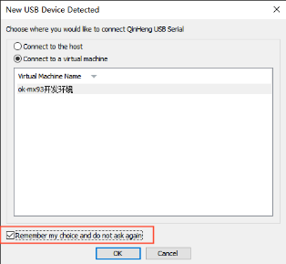
Step 3: Enter the command to flash in the Linux host.
Switch to the images directory. According to your different needs, you can select different programming commands to correspond to different programming methods and programming images. If you are not very clear about the difference, it is recommended that you directly select the first programming method:
1. Flash system (u-boot, kernel, and filesystem) to emmc:
forlinx@ubuntu:~/OKMX93-linux-image$ cat ok-mx93-linux-fs.sdcard.a* > rootfs.bin
forlinx@ubuntu:~/OKMX93-linux-image$ sudo uuu -b emmc_all ok-mx93-uboot.bin rootfs.bin
Successful flashing is shown in the following figure:
2. Flash u-boot to eMMC.
forlinx@ubuntu:~/OKMX93-linux-image$ sudo uuu -b emmc ok-mx93-uboot.bin
Successful flashing is shown in the following figure:

5.2.2 Use of UUU Tool in Windows
Step 1: Copy file;
Path: OK-MX9352-C (Linux) User Profile \ Linux \ Flash Tool \ uuu Tool \ uuu.exe
Copy the uuu. exe from the CD material to the uuu directory of the D drive.
Step 2: Use the TYPE-C cable to connect the USB port of the computer host and the OTG port of the development board, set the dip switch to OTG startup, set the OTG dialing code to slave mode, and start the development board. Dial as shown in the figure below:

The OTG interface locations are shown in the following figure:
Step 3: Copy image.
Copy the image to the uuu directory of the D disk, run the cmd program with administrator authority under Windows, and enter the directory where the image file is located. According to your different needs, you can select different programming commands to correspond to different programming modes and programming images. If you are not very clear about the difference, it is recommended that you directly select the first programming mode:
Pack the filesystem into the same file under Linux and copy the resulting rootfs.bin as well as the uboot image (ok-mx93-uboot.bin) to the uuu path.
forlinx@ubuntu:~/OKMX93-linux-image$ cat ok-mx93-linux-fs.sdcard.a* > rootfs.bin
After copying, the file under the uuu path is as shown below:
Flash U-Boot, kernel, and the file system to the eMMC:
Microsoft Windows [Version 10.0.19045.2604]
(c) Microsoft Corporation.All rights reserved.
C:\Users\Administrator>D: //Enter D disk
D:\>cd uuu //Enter uuu folder
D:\uuu>uuu.exe -b emmc_all ok-mx93-uboot.bin rootfs.bin
Successful flashing is shown in the following figure:
Flash u-boot to eMMC:
Microsoft Windows [Version 10.0.19045.2604]
(c) Microsoft Corporation. All rights reserved.
C:\Users\Administrator>D: //Enter D disk
D:\>cd uuu //Enter uuu folder
D:\uuu>uuu.exe -b emmc ok-mx93-uboot.bin
Successful flashing is shown in the following figure:
5.3 Separate Image Updating
After the system boots, place the device tree image to be replaced and the Image file into a USB drive, then insert it into the development board. Enter the following command in the terminal (note that the mount path of the USB drive must be modified according to the actual situation):
root@ok-mx93:~# cd /run/media/Boot-mmcblk0p1/
root@ok-mx93:/run/media/Boot-mmcblk0p1# ls
Image OK-MX9352-C.dtb
root@ok-mx93:/run/media/Boot-mmcblk0p1# cp /run/media/boot-sda1/OK-MX9352-C.dtb ./
//Copy the device tree image to this directory
root@ok-mx93:/run/media/Boot-mmcblk0p1# cp /run/media/boot-sda1/Image ./
//Copy the kernel image to this directory
root@ok-mx93:/run/media/Boot-mmcblk0p1# sync //Sync Save
5.4 Updating Logo Separately
Make a PNG image with a resolution of 1280x800 and rename it logo2-1280x800.png
root@ok-mx93:~# cd /usr/share/weston
root@ok-mx93:/usr/share/weston# cp /run/media/boot-sda1/logo2-1280x800.png ./
//Copy the logo to this directory
root@ok-mx93:/usr/share/weston# sync //Sync Save